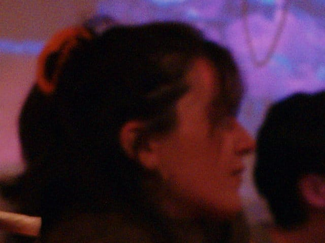

Anthie Stasinou

Anthie Stasinou is an Athens-based artist, dancer, choreographer, and creative producer. She holds a degree in Informatics from the Athens University of Economics and Business and is currently pursuing an M.A. in Audiovisual Arts in the Digital Era at the Ionian University. Her background combines movement, technology, and audiovisual media, shaping an interdisciplinary artistic practice.
For the past years, her work has explored the relationship between the body and other artistic forms, bringing together dance, film, sound, performance, and digital media. She is particularly interested in creating experiences that connect personal stories with collective questions, often through collaboration with artists from different disciplines.
Alongside her artistic practice, she develops video content and creative projects, taking an active role not only in the artistic direction but also in the production and organization of her own work. In 2024, she co-founded FART, a collective of four dancers through which she creates performances and digital content while coordinating the creative production behind the group's projects.
Her practice is driven by curiosity, collaboration, and a constant desire to explore new ways of creating and sharing work.